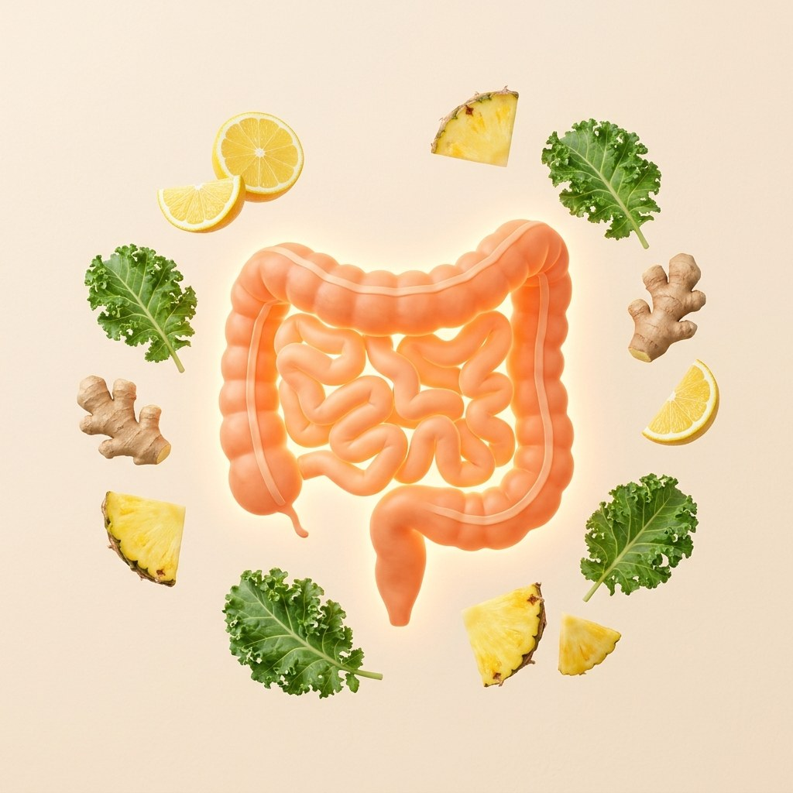
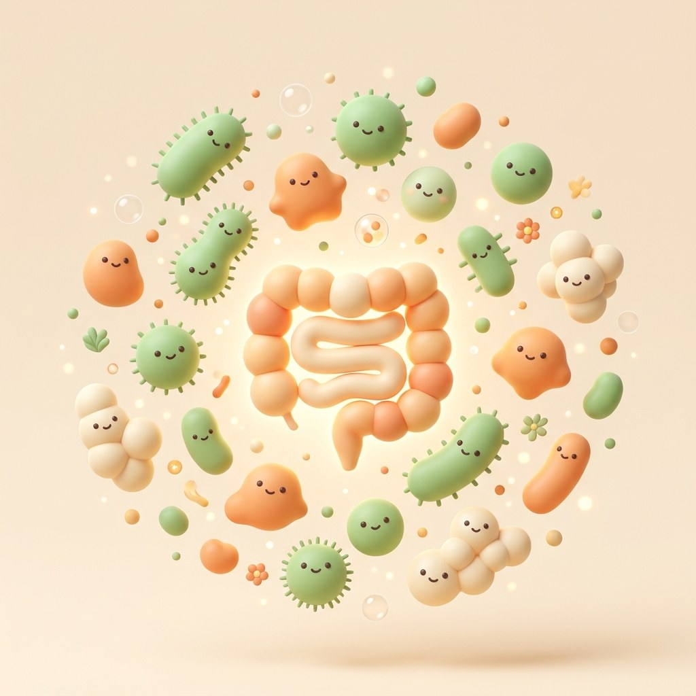
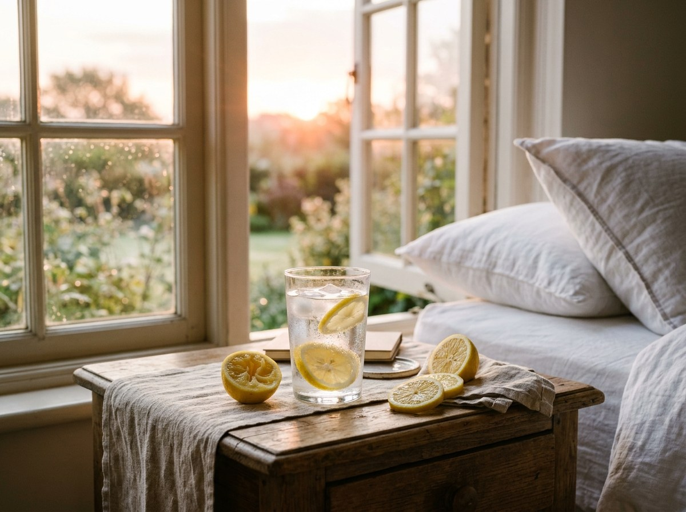
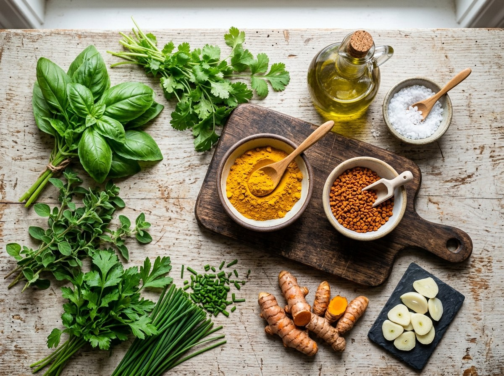
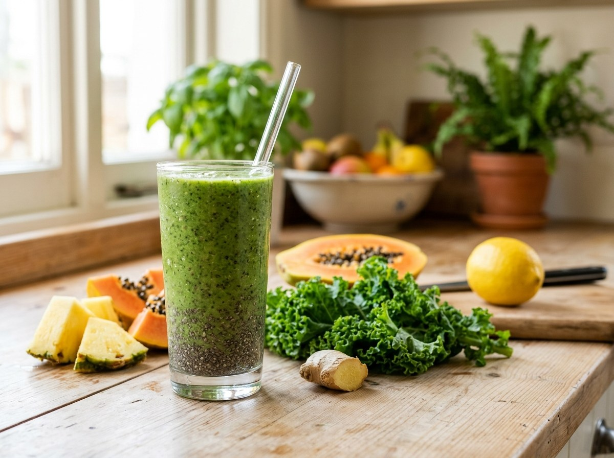
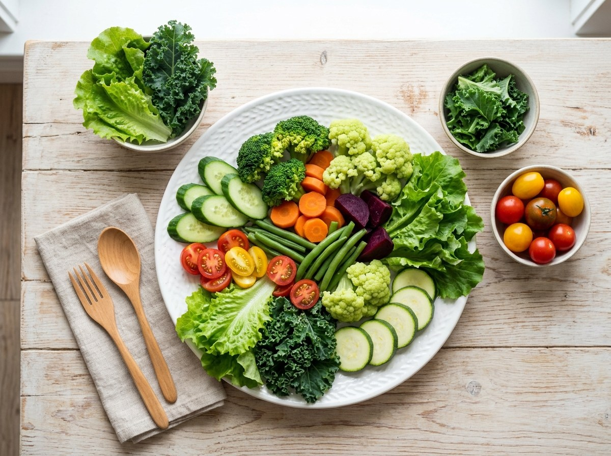

Prepare o terreno antes de desparasitar: um roteiro simples, dia a dia, para deixar o intestino mais leve.

Passo a passoDia 1 Dia 2 Dia 3
1Alimentação leve
2Repetir com constância
3Dia da limpeza
PorLuís ManoelTerapeuta naturopata integrativo
Limpeza Intestinal em 3 dias
Comece por aqui
Um preparo de 3 dias para deixar o intestino mais leve
Um preparo de 3 dias para deixar o intestino mais leve antes da desparasitação.
Costuma ser indicada para quem sente
Inchaço abdominal
Gases e estufamento constante
Intestino preso
Sensação de barriga inchada
Os sinais acima são considerados sem doença diagnosticada.
?
É opcional. Sem esses sinais e sintomas, você pode seguir direto para o protocolo.
O objetivo
Esvaziar e aliviar o intestino antes da fase de eliminação.

Conteúdo educativo. Não substitui avaliação profissional.2
Limpeza Intestinal em 3 dias
Segurança em primeiro lugar
Essa limpeza é para você?
Fazer com segurança é parte do método. Não faça se você:
Está gestante ou amamentando
Tem problema nos rins ou no coração
Tem Crohn, retocolite, obstrução intestinal ou diverticulite
Está com dor abdominal forte sem diagnóstico
Está com diarreia ou sangue nas fezes
Tem mais de 65 anos
Tem diabetes com uso de medicação: meça a glicemia antes de fazer a limpeza
Usa diurético ou remédio contínuo sem orientação
Tem pressão baixa com frequência
Está debilitado ou desnutrido
Na dúvida, converse com um profissional de saúde antes de começar.
Conteúdo educativo. Não substitui avaliação profissional.3
Limpeza Intestinal em 3 dias
Calendário
Quando começar
Usamos o ciclo da lua como guia do calendário. Assim fica fácil saber quando começar cada fase.
Fase 1 · Preparar o terreno (lua nova). É importante a limpeza do intestino. Siga o calendário abaixo.
1Fase 1
Começar a limpeza 3 dias antes da lua nova.
2Limpeza
Só pode comer os alimentos permitidos.
3Pós 3 dias
Começar a usar as indicações terapêuticas do método.
4Fase 2
Explicada nas próximas aulas.

Dica: a lista de alimentos permitidos do protocolo de limpeza intestinal está resumida na próxima página.
Conteúdo educativo. Não substitui avaliação profissional.4
Limpeza Intestinal em 3 dias
Os 3 dias
As regras dos 3 dias
A ideia é dar uma pausa para o estômago e o intestino, com comida simples, leve e natural. Coma só os alimentos permitidos do protocolo.
Pode
Folhas verdesà vontade.
Legumescozidos no vapor ou refogados: brócolis, cenoura, pepino, berinjela, tomate, couve-flor, abobrinha, vagem ou beterraba.
Frutas do lancheabacate, coco seco, maçã, pera, kiwi. Só uma opção por lanche.
Suco naturalpermitido (receita no Dia 1).
Fica de fora
Proteína de origem animalcarne vermelha, carne de porco, carneiro, frango, peixe, ovos, leite e derivados.
Bebidas com cafeínacafé com ou sem adoçante, chá verde, chá-mate, refrigerantes e bebidas alcoólicas.
Açúcar e refinadosdoces, adoçante, pães, massas, bolos e biscoitos.
Industrializadosembutidos, enlatados, temperos prontos e molhos prontos.

Temperos que eu recomendo
Açafrão, manjericão, orégano, salsinha, coentro, cebolinha, tomate, alho fatiado, colorau (urucum), azeite de oliva extravirgem e sal integral a gosto.
Conteúdo educativo. Não substitui avaliação profissional.5
Limpeza Intestinal em 3 dias
Dia 1
A rotina completa
Ao acordar1 limão espremido em 200 ml de água.
Café da manhãSUCO NATURAL, receita ao lado.
Lanche da manhã (opcional)Escolha um: 50 g de abacate, 50 g de coco seco, 5 cenouras baby ou 1 fruta (maçã, kiwi ou pera).
Antes do almoço1 limão espremido em 200 ml de água.
AlmoçoFolhas verdes à vontade e legumes cozidos (escolha no máximo 3 a 4), no vapor ou refogados.
Lanche da tarde (opcional)Repita o SUCO NATURAL, mesma receita do café da manhã, ou uma opção do lanche da manhã.
JantarIgual ao almoço.

Suco natural
1 limão300 ml de água200 g de abacaxi200 g de mamão3 folhas médias de couvehortelã e gengibre a gosto2 colheres (sopa) de chia
Bata tudo no liquidificador, sem açúcar, sem adoçante e sem coar.
Tomar o suco todo.
Conteúdo educativo. Não substitui avaliação profissional.6
Limpeza Intestinal em 3 dias
Dia 2
Repita o Dia 1
O Dia 2 é igual ao Dia 1. Repita tudo, inclusive o SUCO NATURAL.
Ao acordar1 limão espremido em 200 ml de água.
Café da manhãSUCO NATURAL, mesma receita do Dia 1.
Lanche da manhã (opcional)Escolha um: 50 g de abacate, 50 g de coco seco, 5 cenouras baby ou 1 fruta: maçã, kiwi ou pera.
Antes do almoço1 limão espremido em 200 ml de água.
AlmoçoFolhas verdes à vontade e legumes cozidos no vapor ou refogados.
Lanche da tarde (opcional)Repita o SUCO NATURAL ou uma opção do lanche da manhã.
JantarIgual ao almoço.

Suco natural
1 limão300 ml de água200 g de abacaxi200 g de mamão3 folhas médias de couvehortelã e gengibre a gosto2 colheres (sopa) de chia
Bata tudo no liquidificador, sem açúcar, sem adoçante e sem coar.
Tomar o suco todo.
Conteúdo educativo. Não substitui avaliação profissional.7
Limpeza Intestinal em 3 dias
Dia 3
O dia da limpeza
Faça em um dia livre e fique em casa, perto do banheiro.
Ao acordar1 limão espremido em 200 ml de água, com canudo.
Café da manhãSUCO NATURAL, mesma receita do Dia 1.
Lanche da manhã (opcional)Escolha um: 50 g de abacate, 50 g de coco seco, 5 cenouras baby ou 1 fruta: maçã, kiwi ou pera.
Antes do almoço1 limão espremido em 200 ml de água.
Almoço · até as 12hFolhas verdes à vontade e legumes cozidos no vapor ou refogados. O almoço do Dia 3 é, no máximo, até as 12 horas.
Tarde · limpeza do intestino · 14hÀs 14h, tome 30 g de sal amargo com 1 limão espremido em 150 ml de água. Se após 2 horas não tiver evacuado, tome a segunda dose de sal amargo.
Hidratação
O procedimento servirá para limpar o intestino e poderá causar diarreia. Neste caso, mantenha a hidratação com água e/ou água de coco natural.
Conteúdo educativo. Não substitui avaliação profissional.8
Limpeza Intestinal em 3 dias
Durante e depois
Cuide do seu corpo também depois
Sintomas que podem ocorrer durante o protocolo
TonturasPalpitaçãoFraquezaVômitosDor abdominal ou diarreiaIndisposiçãoSonolênciaDores de cabeça
Se algum sintoma for intenso ou não passar, interrompa e procure um profissional de saúde.
Descanso do intestino
O ideal é ficar até o dia seguinte sem comer, para o sistema digestivo descansar. Se não conseguir, pode comer uma sopa de legumes permitidos, com os temperos permitidos e o sal integral.
O dia seguinte
Volte com uma alimentação leve, como sopa de legumes com ovos ou frango. Frutas também estão liberadas.
Depois da limpeza, vale evitar
EmbutidosLeite e derivadosAlimentos com glútenAçúcar
Dê preferência a alimentos naturais.
Conteúdo educativo. Não substitui avaliação profissional.9
Limpeza Intestinal em 3 dias
Antes de começar
Lista de compras
Tudo o que aparece no roteiro, reunido em um só lugar. Marque o que já tem em casa.
Folhas e legumes
Folhas verdes
Brócolis, cenoura, pepino
Berinjela, tomate, couve-flor
Abobrinha, vagem, beterraba
Couve (para o suco)
Frutas e lanches
Limão (água e suco)
Abacaxi e mamão (suco)
Abacate, maçã, pera ou kiwi
Coco seco
Cenouras baby
Suco e hidratação
Gengibre e hortelã
Chia
Água de coco natural
Sal amargo (Dia 3)
Temperos
Açafrão, manjericão, orégano
Salsinha, coentro, cebolinha
Alho e colorau (urucum)
Azeite de oliva extravirgem
Sal integral
Conteúdo educativo. Não substitui avaliação profissional.10
Limpeza Intestinal em 3 dias
Resumo
O roteiro em um olhar
1
Dia 1
Dieta + suco natural
2
Dia 2
Repetir o Dia 1
3
Dia 3
Dieta até o almoço; sal amargo às 14h
Depois
Manter até o dia seguinte sem comer, para descansar o sistema digestivo
Depois: seguir uma alimentação com restrição de glúten, leite e derivados, açúcar e alimentos ultraprocessados. Prefira uma alimentação mais saudável.
Próximo passo
Devolva ao intestino o equilíbrio que faz o resultado durar
Depois de eliminar, é hora de seguir o método Desparasitação Descomplicada, com o Luís Manoel.
Luís Manoel · Terapeuta naturopata integrativo Conteúdo educativo. Não faz diagnóstico nem substitui avaliação profissional.